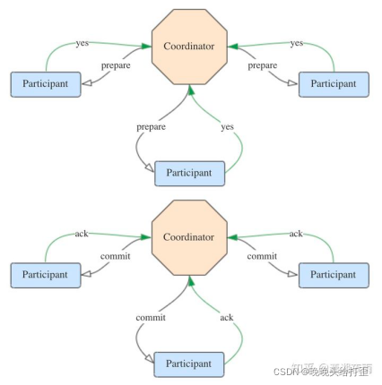
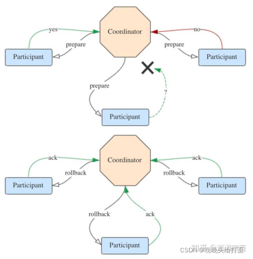
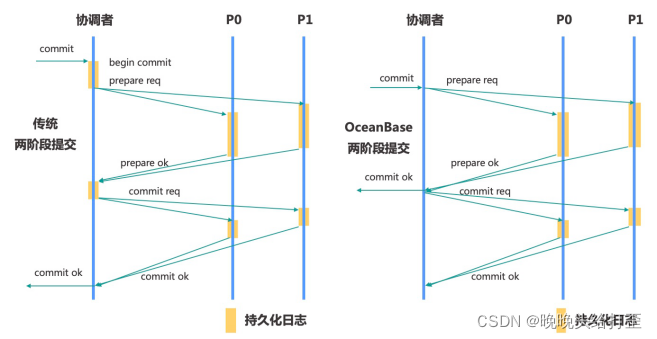

01 事务管理
1.简介¶
基本概念¶
- 原子性
两阶段提交协议保证事务的原子性
- 一致性
事务必须是使数据库从一个一致性状态变到另一个一致性状态。一致性与原子性是密切相关的
- 隔离性
在MySQL模式下，支持 Read Committed 隔离级别和 Repeatable Read 隔离 级别。
- 持久化
redo log记录数据修改,WAL机制保证宕机恢复，paxos保证多副本数据同步
执行流程¶
- 创建全局事务ID
- 识别分区数据
- 创建分区对应的上下文(记录修改)
- 等待commit/rollback
- 持久化到clog
-
ddl发起隐式commit,断开连接发起隐式rollback
-
以一个分区的一条事务日志为例，正常的流程大致如下: 
在 follower 上，会对已提交的日志实时进行回放。回放流程大致如下:
全局时间戳¶
- 对于用户租户而言，租户级别内部表 __all_dummy 的 leader 作为 GTS 服务提供者，时间来源于该leader的本地时钟。GTS 默认是三副本的，其高可用能力跟普通表的能力一样。
- 对于系统租户，使用 __all_core_table 的 leader 作为 GTS 服务的提供者，高可用能力与普通表一样
- 时间戳正确性保证
- 有主改选
-
原 Leader 主动发起改选的场景，我们称为有主改选。新 leader 上任之前先获取旧 leader 的最大已经授 权的时间戳作为新 leader 时间戳授权的基准值。因此该场景下，GTS 提供的时间戳不会回退。
-
- 无主选举
-
原 leader 与多数派成员发生网络隔离，等 lease 过期之后，原 follower 会重新选主，这一个过程，我们 称为无主选举。选举服务保证了无主选举场景下，新旧 Leader 的 lease 是不重叠的，因此能够保证本地 时钟一定大于旧主提供的最大时间戳。因此新 leader 能够保证 GTS 提供的时间戳不回退。
-
事务控制¶
- 事务配置
- 大小
- 2.x版本上限为100M，3.x不做限制
- 配置(租户优先)
- 租户级配置项 _tenant_max_trx_size
- 集群级配置项 _max_trx_size
- 状态
- 虚拟表 __all_virtual_trans_stat 里的state字段标识了事务所处的状态
- 超时
- 语句超时时间,系统变量ob_query_timeout,默认为10s
- 事务超时时间,系统变量ob_trx_timeout,事务超时时需应用主动发起rollback
- 事务超时自动回滚时间,系统变量 ob_trx_idle_timeout,即session上一个事务处于的 IDLE(空闲) 状态的最长时间
- Savepoint
- 事务执行中的保存点，可回滚至保存点
redo log¶
以物理日志的形式记录数据修改历史(操作结果)
遵循WAL(write-ahead logging)原则, 在事务提交前将 Redo 日志持久化至clog, 用于宕机恢复
采用 Multi-Paxos 协议 进行多副本同步, 提交事务需要保证redo日志已同步到多数派的副本上时才能成功, 最终会同步到所有副本上
日志文件¶
- 简述
分区级别的日志流,保证有序连续,最终流入日志文件 - 类型
- Clog(commit log)
记录redoLog内容,同步多副本 - ilog(index log)
Clog的索引文件,记录连续递增的Clog文件ID - 产生和收集
事务提交时将redolog写入clog,以2MB大小为限制,交予clog同步其余副本(半数以上)
单条 Redo 日志聚合了多次写操作的内容 - 控制与回收
clog_disk_usage_limit_percentage控制Clog或ilog磁盘空间的使用上限
clog_disk_utilization_threshold使用下限
本地事务概述¶
指事务所操作的表的分区Leader全部在同一个Server上，并且与Session建立的Server具有相同的事务
单分区事务
事务只涉及一个分区, 如同一张表的同一个分区单机多分区事务事务只涉及多个分区, 如同事务下不同表的操作
分布式事务概述¶
事务涉及的分区数量大于一个 或 事务涉及的分区数量只有一个，且分区leader和事务session位置不在同一个server
俩阶段提交(2PC)¶
引入一个中心节点统一处理所有节点的执行逻辑，以感知每个节点的事务执行情况。该中心节点称为协调者(coordinator)，被协调者调度的其它节点称为参与者(participant)。
2PC将分布式事务分成了两个阶段，两个阶段分别为提交请求（投票）和提交（执行）。协调者根据参与者的响应来决定是否需要真正地执行事务。一般地，还有一个预处理阶段，包括获取行锁，生成redo
Prepare阶段:
1.协调者向所有参与者发送prepare请求与事务内容，询问是否可以准备事务提交，并等待参与者的响应。
2.参与者执行事务中包含的操作，并记录undo日志（用于回滚）和redo日志（用于重放），但不真正提交。
3.参与者向协调者返回事务操作的执行结果，执行成功返回yes，否则返回no。 Commit阶段: success: 若所有参与者都返回yes，说明事务可以提交： 1.协调者向所有参与者发送commit请求。 2.参与者收到commit请求后，将事务真正地提交上去，并释放占用的事务资源，并向协调者返回ack。 3.协调者收到所有参与者的ack消息，事务成功完成。  failed: 1.协调者向所有参与者发送rollback请求。 2.参与者收到rollback请求后，根据undo日志回滚到事务执行前的状态，释放占用的事务资源，并向协调者返回ack。 3.协调者收到所有参与者的ack消息，事务回滚完成。

OceanBase对传统的2PC流程做了优化，传统的两阶段提交的延迟相当于2次RPC和4次写日志操作。
OceanBase采用协调者无状态设计,协调者不再维护分布式事务的状态
而是在宕机恢复时,通过所有参与者的局部状态动态构造分布式事务的全局状态。
避免了协调者写日志，一次两阶段提交的延迟降低到1次RPC和1次写日志操作。 其流程如下图所示: 
PREPARE阶段
协调者:协调者向所有的参与者发起 prepare request
参与者:参与者收到prepare request之后，决定是否可以提交，如果可以则持久化prepare log并且向协调者返回prepare成功，否则返回prepare失败。
COMMIT阶段
协调者:协调者收齐所有参与者的 prepare ack 之后，进入 COMMIT 状态，向用户返回事务 commit 成功， 然后向所有参与者发送事务 commit request。
参与者:参与者收到commit request之后释放资源解行锁，然后提交commit log，日志持久化完成之后给协调者回复commit ok 消息，最后释放事务上下文并退出。
- ps: XA事务不做赘述可自行了解
隔离级别¶
OceanBase 数据库目前支持了以下几种隔离级别:¶
- Oracle 模式
- 读已提交(ReadCommitted)
- 可串行化(Serializable)
- MySQL模式
- 读已提交(Read Committed)
- 可重复读(Repeatable Read)
-
OceanBase 数据库默认的隔离级别为读已提交(Read Committed)。
-
级别及配置
- 级别
- 全局 Global
- Session 级别
- 配置
SET [GLOBAL | SESSION] TRANSACTION ISOLATION LEVEL REPEATABLE READ
事务并发控制和一致性¶
概述¶
- 数据并发性
- 为了更好地提高事务的处理能力，数据库允许用户通过事务并发地访问与修改同一个数据，我们需要为这种 数据并发性来定义语义。
- 数据一致性
- 数据库通过维护每次更改，产生新的版本，从而做到读写不互斥, 这被称为多版本并发控制(MVCC)。对于不同的事务版本，我们需要为这种数据多版本来定义语义，保证用户看到一个一致的数据库状态，即数据的一致性快照。
- ps: 数据一致性不等价于 ACID 中的 C (Consistency)。
- 可串行化(serializable)
- 我们可以利用事务中的读写操作来为事务来建立依赖关系
- 依赖关系代表事务串行化成串行执行序后的事务定序，若事务B依赖事务A，事务A应该排在事务B前面:
- 写写冲突(Write Dependency):当事务A修改数据X后，事务B再修改同一数据X，事务B依赖事务A。
- 写读冲突(Read Dependency):当事务A读取数据X后，若数据X对应是由事务B修改的，事务A依赖事务B。
- 读写冲突(Anti Dependency):当事务A读取数据X后，事务B再修改了同一数据X，事务B依赖事务A。
- 两阶段锁和乐观锁机制
- 两阶段锁
排它地通过加锁限制其他的事务的冲突修 改，并通过死锁检测机制回滚产生循环的事务保证无环 - 乐观锁机制
在提交时的检测阶段，回滚所有可能会导 致异常的事务保证不会产生异常
- 两阶段锁
分布式事务处理模型¶

事务管理器通过 调用接口来触发 OceanBase 数据库内部的子程序，子程序处理完毕后将结果返回给事务管理器，事务管理 器将会根据返回的结果来进行下一步处理
事务上下文内存模型¶

事务表是一个内存表，代表本副本中正在执行中的事务集合，事务在执行过程中会根据不同的事务状态，来 决定是否要读取到对应的数据。
其中数据状态包含提交(COMMIT )、执行(RUNNING)、回滚(ABORT)。对于执行(RUNNING)的事务，可能存在 本地提交版本号 (localcommit version，即 prepare version);对于提交的事务,
存在 全局提交版本号 (global commit version，即 commit version)。其中 全局提交版本号 代表事务最终的版本，也是我们一致性位点的决定因素。
如上图右所示，事务 6 处于回滚状态;事务 7 处于提交状态， 全局提交版本号 为 80;事务 12 处于执行状 态，不存在 本地提交版本号 ;事务 15 处于执行状态， 本地提交版本号 为 130。
多版本读一致性模型¶